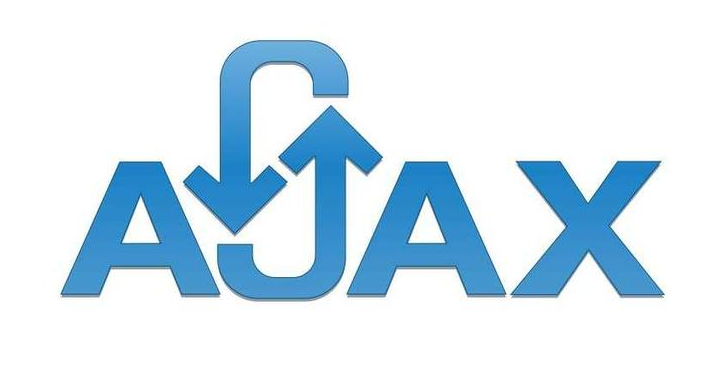

第 1 章：原生 AJAX
1.1 AJAX 简介
AJAX 全称为 Asynchronous JavaScript And XML，就是异步的 JS 和 XML。
通过 AJAX 可以在浏览器中向服务器发送异步请求，最大的优势：
无刷新获取数据。AJAX 不是新的编程语言，而是一种将现有的标准组合在一起使用的新方式。
1.2 XML 简介
XML 可扩展标记语言。 XML 被设计用来传输和存储数据。
XML 和 HTML 类似，不同的是 HTML 中都是预定义标签，而 XML 中没有预定义标签，
全都是自定义标签，用来表示一些数据
1 | //比如说我有一个学生数据： |
现在已经被 JSON 取代了
1 | //用 JSON 表示： |
1.3 AJAX 的特点
1.3.1 AJAX 的优点
- 可以无需刷新页面而与服务器端进行通信。
- 允许你根据用户事件来更新部分页面内容。
1.3.2 AJAX 的缺点
- 没有浏览历史，不能回退
- 存在跨域问题(同源)
- SEO 不友好
1.4 AJAX 的使用
1.4.1 核心对象
- XMLHttpRequest，AJAX 的所有操作都是通过该对象进行的。
1.4.2 使用步骤
创建 XMLHttpRequest 对象
var xhr = new XMLHttpRequest();设置请求信息
xhr.open(method, url);//可以设置请求头，一般不设置
xhr.setRequestHeader(‘Content-Type’, ‘application/x-www-form-urlencoded’);
- 发送请求 xhr.send(body) //get 请求不传 body 参数，只有 post 请求使用
- 接收响应 //xhr.responseXML 接收 xml 格式的响应数据 //xhr.responseText 接收文本格式的响应数据 xhr.onreadystatechange = function (){ if(xhr.readyState == 4 && xhr.status == 200){ var text = xhr.responseText; console.log(text); } } 1.4.3 解决 IE 缓存问题 问题：在一些浏览器中(IE),由于缓存机制的存在，ajax 只会发送的第一次请求，剩 余多次请求不会在发送给浏览器而是直接加载缓存中的数据。 解决方式：浏览器的缓存是根据 url 地址来记录的，所以我们只需要修改 url 地址 即可避免缓存问题 xhr.open(“get”,”/testAJAX?t=”+Date.now()); 1.4.4 AJAX 请求状态 xhr.readyState 可以用来查看请求当前的状态 https://developer.mozilla.org/zh-CN/docs/Web/API/XMLHttpRequest/readyState 0: 表示 XMLHttpRequest 实例已经生成，但是 open()方法还没有被调用。 1: 表示 send()方法还没有被调用，仍然可以使用 setRequestHeader()，设定 HTT